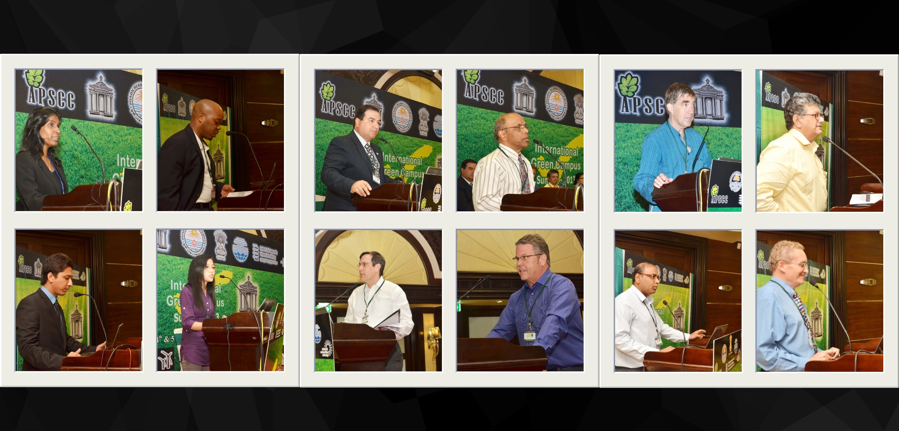

In April 2013, APSCC convened the Green Campus Summit in Puducherry — the first international summit of its kind in India — uniting more than 200 delegates from 12 countries around a single, urgent question: how can the world's campuses become living models of sustainability?
The Summit marked a defining moment in APSCC's history. As the first international forum in India dedicated wholly to campus sustainability, it drew academics, administrators, researchers, and students from across the industrialised and developing worlds — a deliberate bridging of perspectives that would become a hallmark of APSCC's global engagement.
Delegates arrived in Puducherry from twelve nations, carrying with them a shared conviction that the campus — as a concentrated community of learning, living, and daily practice — is uniquely positioned to demonstrate what a sustainable society can look like. Over the course of the Summit, that conviction was tested, refined, and translated into concrete commitments.
A partnership of institutions
The Summit's intellectual depth was underwritten by a coalition of leading institutions. The Hamburg University of Applied Sciences in Germany brought its distinguished record in sustainability science; Pondicherry University anchored the gathering in the Indian academic landscape; London Metropolitan University in the United Kingdom contributed European campus-management expertise; and the Puducherry Pollution Control Committee (PPCC) lent regulatory and environmental grounding. Together they ensured the Summit spoke to both the science and the practice of campus sustainability.
Four themes, one campus
Discussion at the Summit organised itself around four interlocking themes. Sustainable campus design examined how buildings, energy systems, and green spaces can be planned to minimise footprint while enriching campus life. Waste management and recycling confronted one of the most visible — and tractable — challenges facing institutions of every size. Sustainability in the curriculum asked how the values of stewardship can be woven into teaching itself, so that every graduate leaves equipped to act. And community engagement insisted that a campus cannot be sustainable in isolation from the neighbourhoods and ecosystems that surround it.

What made the Summit distinctive was its deliberate pairing of developed- and developing-country perspectives. Where an industrialised campus might grapple with retrofitting legacy infrastructure, an emerging institution might have the freedom to build sustainably from the ground up. By putting these experiences in conversation, the Summit surfaced solutions neither side would have reached alone.
Outcomes that outlasted the week
The Summit closed not with a communiqué but with a set of living commitments. Delegates left having forged collaborative initiatives and cross-border partnerships, and — perhaps most importantly — a shared recognition that sustainability cannot be an add-on or a single department's remit. It must be embedded in every aspect of campus life: in how buildings are designed, how waste is handled, how students are taught, and how institutions relate to their communities.
Sustainability is not a programme a campus runs; it is the way a campus lives.
In recognition of exemplary leadership in campus sustainability, the Summit's Campus Challenge Award was presented to VIT University — a tribute to the institution's demonstrated commitment to the very principles the Summit sought to advance.
Advancing the Global Goals
The Green Campus Summit 2013 directly advanced the aims later codified in the UN Sustainable Development Goals — connecting quality education, sustainable communities, responsible consumption, climate action, and global partnership in a single, campus-centred vision.


The Green Campus Summit 2013 was APSCC's inaugural international summit, held in Puducherry, India, in April 2013. Institutional partners included the Hamburg University of Applied Sciences (Germany), Pondicherry University, London Metropolitan University (UK), and the Puducherry Pollution Control Committee.